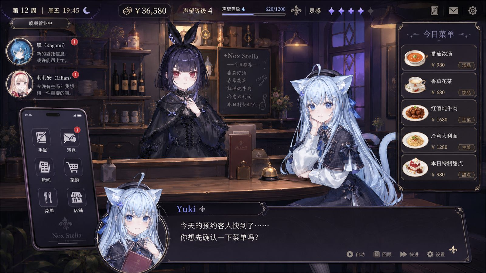
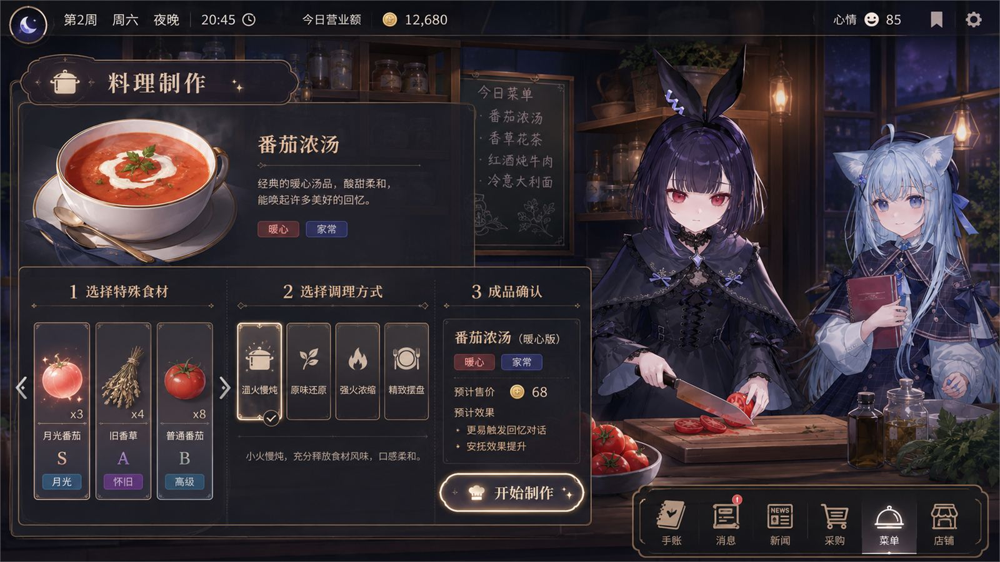
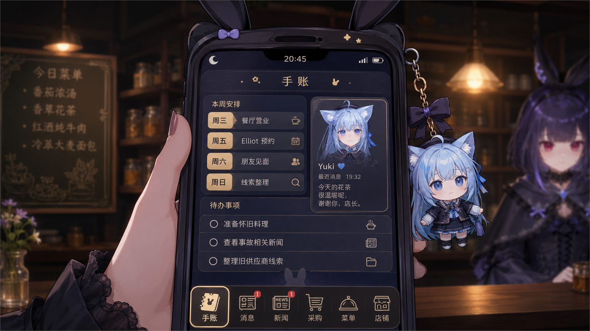
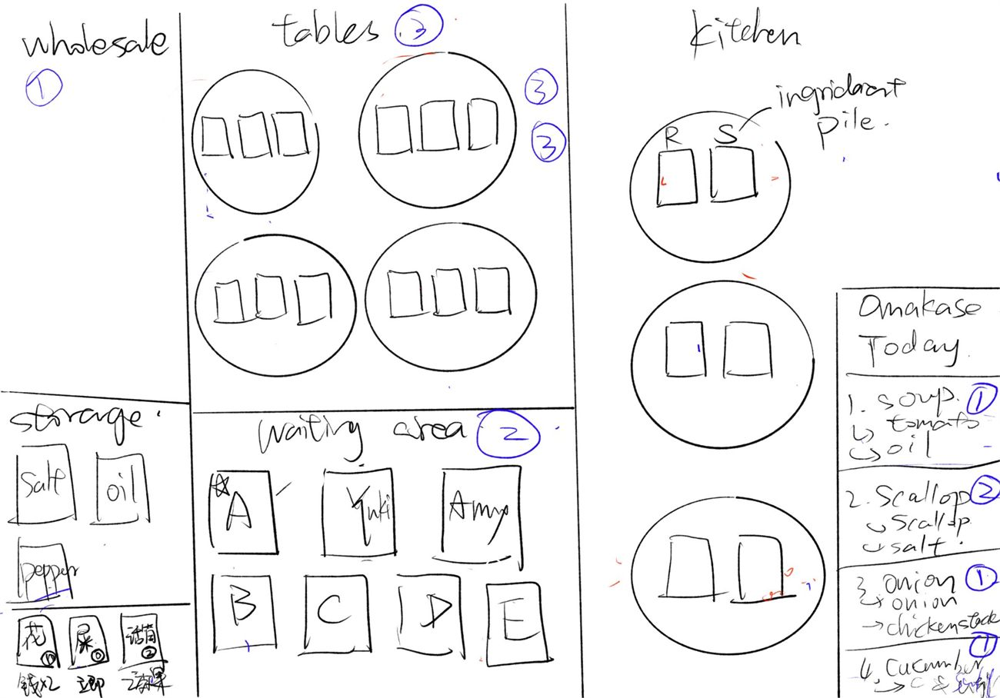
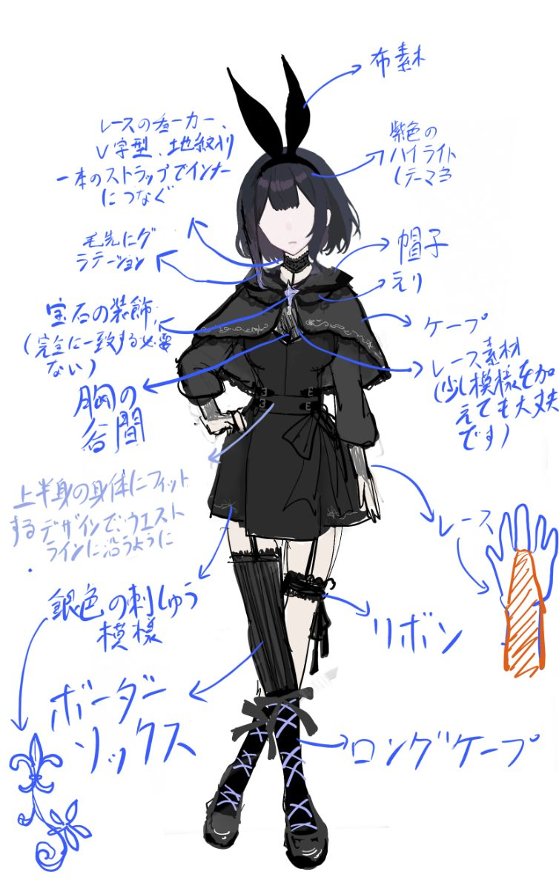
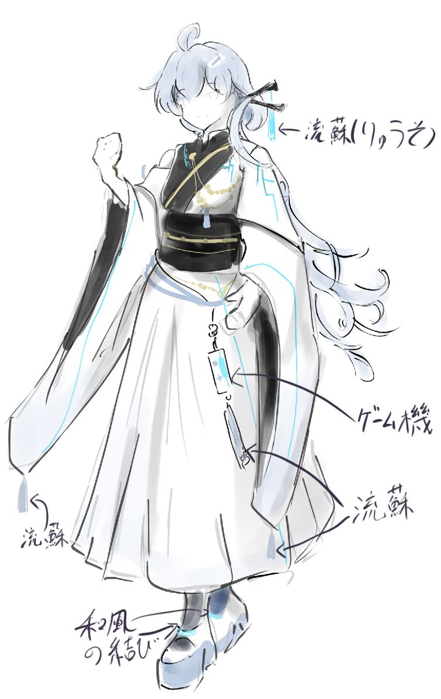

Featured Work
Schoolive
A restaurant-management mystery where ingredients, cooking choices, and customer memories are also the player’s investigation tools.

Overview
The player’s family is killed as part of a conspiracy. What they inherit is the restaurant. So the player runs the place their family left behind while trying to find out what actually happened to them, and those two activities are the same activity.
It is a narrative game and a management sim at once. The reason that matters is in the next section.
Design challenge
The challenge was not simply to put management and story in the same game. If the restaurant systems only make money while the narrative only happens in dialogue scenes, the player is still switching between two separate games and the management half is just a paywall on the story.
I wanted the management loop itself to change what the player knows.
What you do in the restaurant changes what you can learn about the mystery.
Core loop
Run the restaurant → acquire ingredients with tags → decide what to buy and how to cook it → trigger specific customers or reactions → uncover memories or clues → unlock character stories and new investigation directions → return to the restaurant with different priorities.

The cooking screen carries the whole argument: pick a tagged ingredient, pick a method, and the preview tells you the dish is now more likely to trigger a memory conversation.
Key design decisions
A draw mechanic that is about people, not collectibles. I folded a draw / random-acquisition structure into ingredients. The player is not rolling for a collectible because gacha exists; they are deciding whether a specific ingredient is worth chasing under resource pressure, because it may unlock a person or a clue. The pull is narrative, and the cost is economic.
Ingredients carry narrative tags. They are not only economy values. A tag can be the condition for a story event, which means the shopping decision and the investigation decision are one decision.
Cooking method changes dialogue. The same resources produce different information depending on what the player does with them. Slow-simmering something is not just a different profit margin; it is a different conversation.
Family-related food triggers memory. Put something connected to the player’s family on the plate and an old friend or a regular may start talking about them. A routine restaurant action turns into evidence without the game ever switching into “detective mode.”
Character design, art direction, gameplay, and level design all serve the same rule.

Service view. Who sits down, and what you are able to serve them, decides what you can learn that day.
Working the loop on paper first
Before any of this was an interface, it was a sheet of paper. I mapped the restaurant as connected zones covering wholesale, storage, tables, the waiting area and the kitchen, then numbered the order in which the player moves between them during a service.
Laying it out this way is what exposed the real constraint: acquisition, cooking, and customers have to touch each other inside a single shift, or the narrative payload never reaches the player at the moment the decision is made.

Paper pass on the restaurant loop.
Character design
The cast has to do double duty: each character is a customer inside the economy and a source inside the investigation. I design them so their visual language tells you which memories they might be carrying before they say anything.

